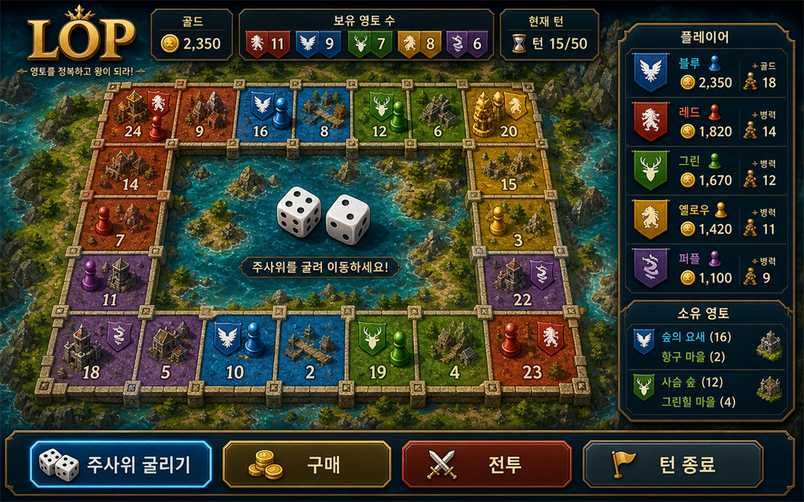

<!doctype html>
<html lang="ko">
<head>
  <meta charset="utf-8">
  <meta name="viewport" content="width=device-width, initial-scale=1">
  <title>LOP 湲고쉷??/title>
  <style>
    body { margin: 0; background: #0b1020; color: #e5e7eb; font-family: Arial, "Malgun Gothic", sans-serif; line-height: 1.65; }
    main { max-width: 920px; margin: 0 auto; padding: 40px 24px 72px; }
    h1, h2 { color: #facc15; line-height: 1.25; }
    h1 { font-size: 34px; }
    h2 { margin-top: 36px; font-size: 22px; }
    p, li { color: #cbd5e1; }
    section { border-top: 1px solid #1f2937; margin-top: 28px; padding-top: 20px; }
    strong { color: #fff; }
    .note { border: 1px solid #854d0e; background: rgba(113, 63, 18, .25); padding: 16px; border-radius: 8px; }
  </style>
</head>
<body>
  <main>
    <h1>LOP 湲고쉷??/h1>
    <p>理쒖떊?? 2026-06-22</p>

    <section>
      <h2>?뚮젅??誘몃━蹂닿린</h2>

<h3>?뚮젅??誘몃━蹂닿린</h3>


<h2>寃뚯엫 媛쒖슂</h2>
      <p>LOP??吏㏃? ?뚮젅?댄??꾩쓣 紐⑺몴濡????곹넗 ?곹깉 蹂대뱶寃뚯엫?대떎. ?뚮젅?댁뼱??二쇱궗?꾨? 援대젮 留먯쓣 ?대룞?섍퀬, ?곹넗瑜??먮졊?섍굅???꾪닾?섎ʼn, 嫄대Ъ???듯빐 ?듯뻾猷뚯? ?뚯감 ?앹궛??媛뺥솕?쒕떎.</p>
    </section>

    <section>
      <h2>理쒖떊 UX 諛⑺뼢</h2>
      <div class="note">
        <strong>A+C ?덉씠?꾩썐:</strong> 蹂대뱶瑜??붾㈃??以묒떖???ш쾶 ?좎??섍퀬, ?꾩옱 ?댁빞 ???됰룞留??섎떒 ?≪뀡 諛붿뿉???④퀎蹂꾨줈 ?덈궡?쒕떎.
      </div>
    </section>

    <section>
      <h2>?뚮젅???붾㈃ 援ъ“</h2>
      <ol>
        <li><strong>?곷떒 HUD:</strong> 怨⑤뱶, ?곹넗 ?? 蹂묐젰 ?⑷퀎, ?쒖꽦 ?④낵 ?섎? ?뺤텞 ?쒖떆?쒕떎.</li>
        <li><strong>以묒븰 蹂대뱶:</strong> 5x4 蹂대뱶瑜?媛€?????섏궗寃곗젙 ?곸뿭?쇰줈 ?좎??쒕떎.</li>
        <li><strong>?곗륫 ?€???곸꽭 ?⑤꼸:</strong> ?좏깮???€?쇱쓽 ?뚯쑀?? ?듯뻾猷? 蹂묐젰, 嫄대Ъ, ?앹궛 ?뺣낫瑜?怨좎젙 ?쒖떆?쒕떎.</li>
        <li><strong>?섎떒 ?≪뀡 諛?</strong> ?꾩옱 phase瑜?二쇱궗?? 留??좏깮, ?€???됰룞, ?꾪닾, ?뺤궛 媛숈? ?④퀎濡?踰덉뿭?쒕떎.</li>
      </ol>
    </section>

    <section>
      <h2>?쒖옉/?⑤낫???붾㈃</h2>
      <ol>
        <li><strong>寃뚯엫 紐⑺몴:</strong> ?밸━ 議곌굔怨???猷⑦봽瑜?吏㏐쾶 ?ㅻ챸?쒕떎.</li>
        <li><strong>寃뚯엫 ?ㅼ젙:</strong> 李멸? ?몄썝怨??쒖씠?꾨? ?좏깮?쒕떎.</li>
        <li><strong>罹먮┃??怨듦컻:</strong> ?쒕뜡 罹먮┃?곗쓽 ??븷怨?泥????꾨왂 ?뚰듃瑜?蹂댁뿬以€??</li>
      </ol>
    </section>

    <section>
      <h2>湲고쉷??媛쒖꽑??/h2>
      <ul>
        <li>珥덈낫?먮뒗 ?꾩옱 ?댁빞 ???쇱쓣 ?섎떒 ?≪뀡 諛붿뿉??利됱떆 ?????덉뼱???쒕떎.</li>
        <li>?숇젴?먮뒗 蹂대뱶?€ ?곗륫 ?⑤꼸留?蹂닿퀬 ?€???섏씡怨??꾪뿕?꾨? 鍮좊Ⅴ寃?鍮꾧탳?????덉뼱???쒕떎.</li>
        <li>以묒븰 ?ㅻ쾭?덉씠???꾪닾, ?대깽?? ?곸젏泥섎읆 ?좏깮吏€媛€ 留롮? ?쒓컙??吏묒쨷 ?ъ슜?쒕떎.</li>
      </ul>
    </section>

    <section>
      <h2>援ы쁽 ?곹깭</h2>
      <ul>
        <li>?곷떒 HUD ?뺤텞 ?곸슜.</li>
        <li>蹂대뱶 以묒떖 ?덉씠?꾩썐怨??곗륫 ?€???곸꽭 ?⑤꼸 ?곸슜.</li>
        <li>?섎떒 phase ?덈궡 ?≪뀡 諛??곸슜.</li>
        <li>?쒖옉 ?붾㈃??紐⑺몴, ?ㅼ젙, 罹먮┃??怨듦컻 ?먮쫫?쇰줈 ?ш뎄??</li>
        <li>??援щℓ ?꾩뿉??異붽? 蹂묐젰??諛곗튂?????덈룄濡?媛쒖꽑.</li>
        <li>諛곗튂 紐⑤떖???꾩옱 二쇰몦, 異붽? 諛곗튂, 諛곗튂 ??二쇰몦, 留먯뿉 ?⑤뒗 蹂묐젰???쒖떆.</li>
        <li>?뚮젅?댁뼱 留먯씠 ?대룞 寃쎈줈?먯꽌 ???곹넗瑜?吏€?섏튌 ?뚮뒗 ?대룞???뺤젙?섍린 ?꾩뿉 ?뺤감 ?щ?瑜?癒쇱? 臾삳뒗?? ?뺤감瑜??좏깮?섎㈃ ?대떦 ?곹넗濡??대룞?섍퀬, 怨꾩냽 ?대룞???좏깮?섎㈃ ?먮옒 二쇱궗??紐⑹쟻吏€源뚯? ?대룞?쒕떎.</li>
        <li>???곹넗 諛⑸Ц ??怨⑤뱶瑜?吏€遺덊빐 利됱떆 蹂묐젰???앹궛?섎뒗 寃쎈줈瑜??쒓굅?덈떎. 蹂묐젰 蹂닿컯?€ ???앹궛, 諛곗튂, 吏뺤쭛, ?곸젏, ?⑸퀝, 移대뱶濡??쒗븳?쒕떎.</li>
        <li>李⑹????€?쇱뿉 ??留먯씠 ?덉쑝硫??꾪닾瑜?媛뺤젣?쒕떎. ?? 洹???留먯씠 ?먭린 二쇱씤???곹넗 ?꾩뿉 ?덉쓣 ?뚮뒗 湲곗〈泥섎읆 ?듯뻾?몃? ?닿퀬 吏€?섍?嫄곕굹 ?꾪닾瑜??좏깮?????덈떎.</li>
        <li>?⑤같??留먯? ?뚯쑀 ?곹넗 以??섎굹濡??꾪눜?쒕떎. ?뚯쑀 ?곹넗媛€ ?섎굹???놁쑝硫??꾩옱 ?꾩튂???⑥쑝硫? 諛⑹뼱?먭? ?껋? ?꾪닾 ?€?쇱? ?꾪눜 ?꾨낫?먯꽌 ?쒖쇅?쒕떎.</li>
        <li>?곹넗 ?됰룞 紐⑤떖???꾪닾 ?덉긽 ?뺣낫瑜?異붽??덈떎. 怨듦꺽 蹂묐젰怨??섎퉬 蹂묐젰??鍮꾧탳???곗꽭, ?묒쟾, ?꾪뿕, 臾댄삁 ?먮졊?쇰줈 ?쒖떆?쒕떎.</li>
        <li>???곹넗?먯꽌???듯뻾?몄? 蹂댁쑀 怨⑤뱶瑜??④퍡 蹂댁뿬二쇰ʼn ?⑸? ???붿븸 湲곗??쇰줈 ?ъ쑀, 二쇱쓽, 遺€議??곹깭瑜?誘몃━ ?덈궡?쒕떎.</li>
        <li>以묐┰ ?곹넗 援щℓ ??援щℓ ??蹂묐젰 諛곗튂 ?④퀎濡??댁뼱吏꾨떎???ㅻ챸???됰룞 ?꾩뿉 蹂댁뿬以€??</li>
        <li>蹂대뱶 以묒븰??鍮?怨듦컙???꾩옱 ???붿빟 ?⑤꼸??異붽??덈떎. ?꾩옱 ?④퀎, ?뚮젅?댁뼱, 二쇱궗?? ?좏깮 留?蹂묐젰, 蹂댁쑀 怨⑤뱶, 理쒓렐 濡쒓렇瑜??쒖떆?쒕떎.</li>
        <li>留??좏깮, ?대룞吏€ ?좏깮, 媛뺤젣 留ㅺ컖 ?④퀎?먯꽌???좏깮 媛€?ν븳 ?€?쇱쓣 泥?줉??留곸쑝濡?媛뺤“?섍퀬 ?섎㉧吏€???먮━寃?泥섎━?쒕떎.</li>
        <li>?뚮젅???덉떆 ?대?吏€??湲덉옣 蹂대뱶寃뚯엫 UI瑜?李멸퀬???곷떒 HUD瑜?LOP 釉뚮옖???곸뿭怨??뚮젅?댁뼱蹂??먯썝 ?⑤꼸濡??ъ젙?ы뻽??</li>
        <li>蹂대뱶 ?멸낸???대몢???댁븞/?먰?吏€ ?ㅼ쓽 ?꾨젅?? 湲덉옣 ?뚮몢由? ?대? 洹몃┝?먮? ?곸슜??留먰뙋???붾㈃ 以묒떖?쇰줈 ??媛뺥븯寃?蹂댁씠?꾨줉 ?덈떎.</li>
        <li>媛??€?쇱뿉 ?앹옱 ?꾨젅???먮굦???먭볼???뚮몢由ъ? ?대? ?섏씠?쇱씠?몃? 異붽??섍퀬, 蹂묐젰 ?レ옄 媛€?낆꽦???ㅼ썱??</li>
        <li>?곗륫 ?€???곸꽭 ?⑤꼸?€ ?좏깮???곹넗, 湲곕낯 ?섏튂, 蹂묐젰, 嫄대Ъ, 異붿쿇 ?뺤씤 ?뱀뀡?쇰줈 ?섎닠 ?덉떆 ?대?吏€???뺣낫 ?⑤꼸泥섎읆 ?뺣룉?덈떎.</li>
        <li>?섎떒 ?≪뀡 諛붾뒗 1 二쇱궗?? 2 ?대룞, 3 ?됰룞 ?먮쫫???④퀎 移대뱶濡?諛붽퓭 ?꾩옱 ?④퀎媛€ ??吏곴??곸쑝濡?蹂댁씠寃??덈떎.</li>
        <li>?대?吏€ 由ъ냼??紐⑸줉 臾몄꽌 docs/LOP_?대?吏€_由ъ냼??紐⑸줉.md瑜?異붽??덈떎.</li>
        <li>蹂대뱶 諛곌꼍??lop/public/generated/lop-board-map-bg.png瑜??앹꽦?덈떎.</li>
        <li>留먰뙋 踰좎씠?ㅼ슜 lop/public/generated/lop-board-track-bg.png瑜??앹꽦?섍퀬 蹂대뱶 洹몃━???꾨젅?꾩뿉 ?곸슜?덈떎.</li>
        <li>?쒖옉 ?붾㈃ ?덉뼱濡?諛곌꼍??lop/public/generated/lop-start-hero-bg.png瑜??앹꽦?덈떎.</li>
        <li>?꾪닾 寃곌낵李?諛곌꼍??lop/public/generated/lop-battle-result-bg.png瑜??앹꽦?덈떎.</li>
        <li>?€??諛곌꼍 ?щ챸?꾨? 議곗젙???앹옱/湲덉옣 留먰뙋 吏덇컧???뚮젅??以묒뿉??蹂댁씠?꾨줉 ?덈떎.</li>
        <li>?먮졊以묒씤 ?낆? ?€???섎떒???먮졊 ?듯뻾??諛곗?瑜????ш쾶 ?쒖떆?섎룄濡??덈떎.</li>
        <li>?쒖옉?낅룄 ?섎떒???쒖옉 ?듯뻾??諛곗?瑜??쒖떆?섎룄濡??덈떎.</li>
        <li>?꾪닾 ?⑤같 ???먯떊??異쒕컻 湲곗?濡??곗꽑 ?꾪눜?섍퀬, 異쒕컻 湲곗?媛€ 鍮쇱븮湲?寃쎌슦 ?ㅻ줈 媛€??媛€源뚯슫 ?먭린 ?낆쑝濡??꾪눜?섎룄濡??덈떎.</li>
        <li>???곹넗 ?됰룞??吏뺤쭛怨?洹몃깷 吏€?섍?湲곕? 媛숈? ?섎떒 二??됰룞 以꾩뿉 諛곗튂?덈떎.</li>
        <li>吏뺤쭛 UI瑜?蹂묐젰 諛곗튂?€ ?좎궗??移대뱶???붿빟/?щ씪?대뜑 援ъ“濡?諛붽씀怨??대? ?꾩껜 ??컻 ?ㅻ쾭?덉씠瑜??쒓굅?덈떎.</li>
        <li>留먰뙋 ?대?吏€瑜??ㅼ떆 ?앹꽦???쒖옉湲곗?, ?? ?댁븞, 愿묒궛, ?곗븙, ?쒖옣, ?대깽??移몄씠 ?쒕줈 ?ㅻⅨ ?대몢??吏€?뺤깋??媛뽯룄濡?媛쒖꽑?덈떎.</li>
        <li>以묒븰?먯꽌 3D 紐⑤뜽 紐⑥쓽?꾪닾瑜?蹂댁뿬以????덈룄濡?留먰뙋 以묒븰???볦? ?됱? ?꾨젅??援ъ“濡??ㅼ떆 援ъ꽦?덈떎.</li>
        <li>罹먮┃???쇨퇋???붿옄?멸낵 ?댁슱由щ룄濡?留먰뙋 梨꾨룄瑜???텛怨??κ렐 ?고룷瑜대찓 ?λ궃媛?蹂대뱶 ?ㅼ쑝濡??ㅼ떆 議곗젙?덈떎.</li>
        <li>?앹꽦??留먰뙋 ?대?吏€瑜?媛??€??醫뚰몴??留욎떠 ?섎씪 蹂댁씠?꾨줉 ?곸슜??移몃퀎 ?됯낵 吏€?뺢컧??HTML ?€???덉뿉?쒕룄 ?댁뼱吏€寃??덈떎.</li>
        <li>留??쇨퇋???쒖떆 ?ш린瑜??ㅼ썙 蹂대뱶 ??罹먮┃??議댁옱媛먯쓣 媛뺥솕?덈떎.</li>
        <li>誘몄젏???낆? ?섎떒 援щℓ媛€ ?ㅽ듃由쎌쓣 ?쒖떆?섏? ?딅룄濡??뺣━?섍퀬, ?섎떒 ?쒓린???먮졊吏€/?쒖옉吏€ ?듯뻾?몄쿂??利됱떆 ?꾪뿕 ?먮떒???꾩슂???뺣낫??吏묒쨷?섎룄濡??덈떎.</li>
        <li>二쇱궗?? ?대룞, AI ?됰룞, ?⑸퀝 寃곌낵 媛숈? 吏꾪뻾 ?뚮┝?€ 蹂대뱶 以묒븰????뒗 ?앹뾽 ?€???곗긽???좎뒪?몃줈 ?쒖떆??以묒븰 ?붿빟 ?⑤꼸怨?媛숈? ?곗텧??諛섎났?섏? ?딄쾶 ?덈떎.</li>
      </ul>
    </section>
  </main>
<section>
  <h2>2026-06-22 異쒖떆 以€鍮?媛쒖꽑</h2>
  <ul>
    <li>Electron ?곗뒪?ы넲 ?섑띁媛€ <code>file://</code>濡?<code>index.html</code>??吏곸젒 ?щ뒗 諛⑹떇 ?€?? ???대??먯꽌 <code>127.0.0.1</code> 濡쒖뺄 HTTP ?쒕쾭瑜??꾩썙 <code>electron/dist</code> ?뺤쟻 鍮뚮뱶瑜??쒓났?섎룄濡?蹂€寃쏀뻽??</li>
    <li>Next export ?곗텧臾쇱쓽 由ъ냼??寃쎈줈媛€ ?곗뒪?ы넲 ?⑦궎吏€?먯꽌 ?덉젙?곸쑝濡?200 ?묐떟?섎룄濡?留뚮뱾??源뚮쭔 ?붾㈃ 諛고룷 ?꾪뿕??以꾩???</li>
    <li>?ㅽ뻾?뚯씪 踰꾩쟾??<code>0.4.21</code>濡??щ━怨? 由대━利??곗텧臾??대쫫??<code>LOP_v0.4.21_portable.exe</code> 湲곗??쇰줈 留욎톬??</li>
  </ul>
</section>
<!-- RESOURCE_PREVIEWS_START -->
<section class="resource-previews">
  <h2>怨듭쑀???대?吏€ 誘몃━蹂닿린</h2>
  <p>?먮룞 媛깆떊: 2026-06-04. 怨듭쑀 ??臾몄꽌?€ ?④퍡 ?꾨옒 ?대?吏€ 寃쎈줈媛€ ?ы븿?섏뼱???⑸땲??</p>
  <div style="display:flex;flex-wrap:wrap;gap:12px;align-items:flex-start;">
<figure style="margin:12px 0;padding:12px;border:1px solid #e5e7eb;border-radius:8px;background:#fff;">
  
  <figcaption style="margin-top:8px;font-size:13px;color:#4b5563;"><code>lop/out/player/p1_ pirate.png</code></figcaption>
</figure>
<figure style="margin:12px 0;padding:12px;border:1px solid #e5e7eb;border-radius:8px;background:#fff;">
  
  <figcaption style="margin-top:8px;font-size:13px;color:#4b5563;"><code>lop/out/player/p2_intig.png</code></figcaption>
</figure>
<figure style="margin:12px 0;padding:12px;border:1px solid #e5e7eb;border-radius:8px;background:#fff;">
  
  <figcaption style="margin-top:8px;font-size:13px;color:#4b5563;"><code>lop/out/player/p3_smuggler.png</code></figcaption>
</figure>
<figure style="margin:12px 0;padding:12px;border:1px solid #e5e7eb;border-radius:8px;background:#fff;">
  
  <figcaption style="margin-top:8px;font-size:13px;color:#4b5563;"><code>lop/out/player/p4_ trickster.png</code></figcaption>
</figure>
<figure style="margin:12px 0;padding:12px;border:1px solid #e5e7eb;border-radius:8px;background:#fff;">
  
  <figcaption style="margin-top:8px;font-size:13px;color:#4b5563;"><code>lop/out/player/p5_ darkmage.png</code></figcaption>
</figure>
<figure style="margin:12px 0;padding:12px;border:1px solid #e5e7eb;border-radius:8px;background:#fff;">
  
  <figcaption style="margin-top:8px;font-size:13px;color:#4b5563;"><code>lop/out/player/p6_ prist.png</code></figcaption>
</figure>
  </div>
</section>
<!-- RESOURCE_PREVIEWS_END -->
</body>
</html>


